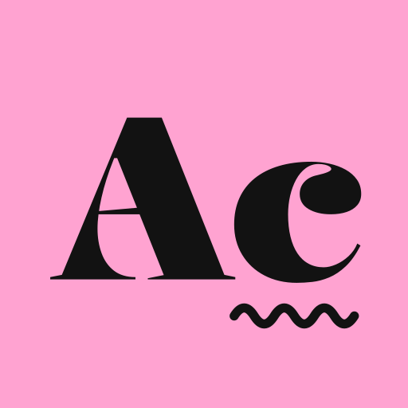

Gemini 4 Argon switches on today.
In Gemini Enterprise, Google's Gemini 4 Argon defaults to on from Oct. 27 in the web and mobile apps and in Workflow Builder. Administrators who want a say should look at Feature Management today.
As of Oct. 27, 2026 · About a 3-minute read
Story illustration
A new model, on by default.
Starting today, Oct. 27, Gemini 4 Argon is set to be on by default in the Gemini Enterprise web and mobile apps. Google's admin documentation, updated Oct. 26, lists the model's toggle as turned off in the global, US and EU locations and says it "defaults to on beginning October 27, 2026." The same date applies to Argon in Workflow Builder and workflow agents.
Gemini Enterprise admin docs · Gemini Enterprise release notesThis is background, not overnight news. Google made Argon generally available in Gemini Enterprise on Oct. 13, switched off at first, according to its release notes. Google describes the model as built for long-horizon work that needs deep reasoning, such as code migrations and frontier research.
Gemini Enterprise release notes · Google (Gemini 4 Argon)- Oct. 13Argon generally available, toggle off
- Oct. 22AlphaEvolve default change announced
- Oct. 26AlphaEvolve defaults to Argon
- Oct. 27App and Workflow Builder toggles default on
The practical reading: an administrator who has not chosen yet should open the settings today. Google's path is the Gemini Enterprise page in the Cloud console, then the app, Configurations and the Feature Management tab, where Model availability sets which models users can pick. The model selector has its own toggle. Not every model can be switched off: for some generally available models, such as Gemini 3.5 Flash, Google says the toggle can't be turned off.
Gemini Enterprise admin docsThe morning in four
- Models
Terra lands in the middle.
OpenAI's new GPT-6.1 Terra costs $1 per million input tokens and $5 per million output, almost half GPT-6.1 Sol's price, Simon Willison wrote on Oct. 26.
Simon Willison - Tools
AlphaEvolve's default moved.
Since Oct. 26, new AlphaEvolve experiments default to Gemini 4 Argon and bill at its rates. Name Gemini 3.8 Flash to keep it; existing experiments keep their models.
Gemini Enterprise release notes - Open source
A 33B model for office work.
Nanbeige LLM Lab's Nanbeige4.3-33B is on Hugging Face under Apache 2.0, with a 524,288-token context, aimed at agentic coding and office tasks, its model card says.
Nanbeige (Hugging Face) - Research
Students map neurons.
Google's AI Quests added Polar Peaks on Oct. 26, a neuroscience quest for students aged 11 to 14. Google says more than 400,000 quests have been completed; that counts quests, not students.
Google (AI Quests)
Cap one person's share of the pool.
Not tested: this is a note from Google's documentation, not a workflow this issue ran. Since Oct. 22, Gemini Enterprise administrators can set single-user quota limits on the Usage & Spending > Usage page, so one user can't consume an edition's whole shared quota pool. Google lists the Standard, Plus and Standard Emerging Market editions.
Gemini Enterprise release notesThe practical reading: with a newer model switching on by default today, a per-person cap is one way to keep a few heavy users from drawing down a shared pool. Google's note doesn't suggest a level. Setting the multiplier is a person's call.
Gemini Enterprise release notes
Autocorrect · The claim, checkedA step up, with the vendor's own caveat.
OpenAI's announcement calls GPT-6.1 Terra "a significant step up from GPT‑5.6 Terra," as quoted by Simon Willison. That compares Terra with its predecessor, not with OpenAI's other current models.
Simon WillisonOpenAI's Ted Sanders gave a narrower picture in a Hacker News comment Willison quoted. He put Terra probably ahead of Astra and Sol on technical communication, similar on vision and computer use but much faster, and "a bit worse on most other things." For subscribers, he wrote, "it's not a bombshell release."
Simon WillisonThe practical reading: by the vendor's own account, Terra's case is price and speed on visual, computer-use and writing tasks, not a general upgrade. This issue did not test it.
Simon WillisonWhat to watch
- Today
Argon toggles default on
In Gemini Enterprise's web and mobile apps and in Workflow Builder, for the global, US and EU locations.
- Ongoing
AlphaEvolve billing
New experiments that use the default model bill at Gemini 4 Argon rates from Oct. 26. Check which model a new run names.
Sources and independent checks
- Gemini Enterprise release notes: Gemini Enterprise release notes
- Gemini Enterprise admin docs: Manage web app features
- Google (Gemini 4 Argon): Gemini 4 Argon is now available for developers
- Google (AI Quests): Our newest AI Quest: Mapping the human brain
- Simon Willison: GPT-6.1 Terra
- Nanbeige (Hugging Face): Nanbeige/Nanbeige4.3-33B model card
Researched and written by an AI agent and checked against its sources by a second agent. Informational only, not investment advice. Not the views of any employer.
Get Morning Note · AI.
Every weekday. What changed in AI, what to put to work, and which claims hold up.
Follow in any feed reader. Copy this address into Feedly, Inoreader, NetNewsWire or the reader you use, and each new issue arrives when it's published. Email delivery is coming.